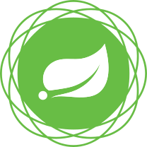
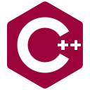
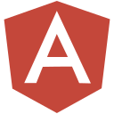

Obecnie jestem studentem kierunku
informatyka na Uniwersytecie Mikołaja Kopernika w Toruniu. Większość mojego czasu poświęcam na naukę
programowania oraz tworzenia stron internetowych. Moim hobby jest uprawianie sportu. Kilka lat trenowałem
K1 (kickboxing), a obecnie staram się doskonalić w zakresie kalisteniki. Oprócz tego lubię czytać książki.
Moimi ulubionymi są:
Saga o wiedźminie - A. Sapkowski,
Ojciec Chrzestny - M. Puzo,
Snajper. Opowieść komandosa Seal Team Six - H. E. Wasdin, S. Templin.
Myślę, że warto się też pochwalić najwyższą średnią ocen na roku (pierwszym).
Moje CV
O mnie
Poznane technologie

JAVA

SPRING
C

C++

GIT

HTML5

CSS3

JAVASCRIPT

JQUERY

BOOTSTRAP

ANGULAR

PLSQL